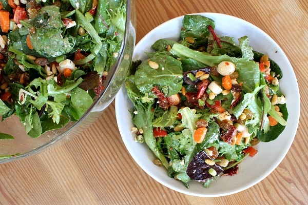

Our resteraunt
Our resteraunt
Ras Koruf Lambs head soup
creamy garlic soup with head of lamb in carmalized shallots. 17
Sheep LeFrio
sheeps breast, fresh arugela with basalmic viniger dressing and cherrry tomatoes. 34
Sheep spring salad
 slices of baby sheeps in fresh romaine and arugele salad locally grown, with sea salt from Iceland. 21
 creamy garlic soup with head of lamb in carmalized shallots. 17
creamy garlic soup with head of lamb in carmalized shallots. 17
 sheeps breast, fresh arugela with basalmic viniger dressing and cherrry tomatoes. 34
sheeps breast, fresh arugela with basalmic viniger dressing and cherrry tomatoes. 34